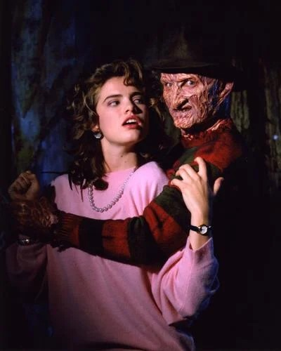

About Freddy
Freddy Krueger is a mirror image of the very real, very terrible killers that stalk the quiet neighborhoods and empty throughways of our own world. He has the ability to pretend to be normal, but on the inside, he's a brutally sadistic artist, and his medium is death
Freddy Films with Robert Englund